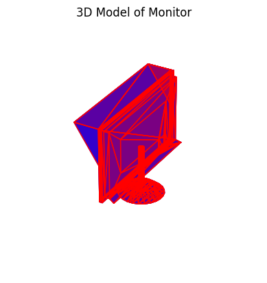
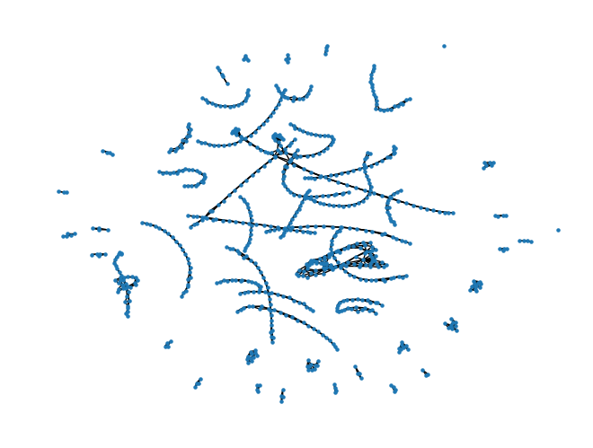
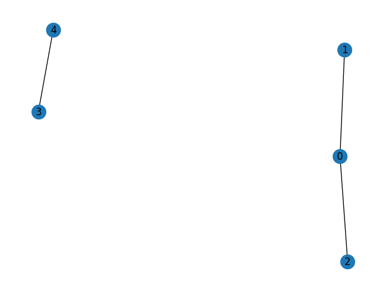

A graph with 798 nodes has an adjacency matrix with 636,804 entries, and for the mesh graph below 2,952 of them are ones. Storing the other 633,852 zeros costs five megabytes as 64-bit integers, and multiplying the matrix by itself spends almost all of its time multiplying zeros by zeros. Sparse formats exist to skip both, and PyTorch has had them for years. This post builds the two common formats by hand on a toy graph, then measures what they buy on the real one, and the measuring is where the lesson is: the first thing anyone reaches for to check the memory saving reports no saving at all, and the speed comparison that looks the most impressive compares two different libraries. The numbers were run in April 2024 and are kept as they were; what changed in the rewrite is what they are said to mean.
A mesh is a graph, and its adjacency matrix is half a percent ones
The example is one object from ModelNet10, a benchmark of 4,899 CAD models in ten categories: a monitor, stored as an OFF file of vertices and triangular faces. Read the file, draw the faces, and it is recognisably a screen on a stand:
import matplotlib.pyplot as plt
import numpy as np
from mpl_toolkits.mplot3d.art3d import Poly3DCollection
def read_off(file):
if "OFF" != file.readline().strip():
raise ValueError("Not a valid OFF header")
n_verts, n_faces, _ = tuple(map(int, file.readline().strip().split(" ")))
verts = [[float(s) for s in file.readline().strip().split(" ")] for _ in range(n_verts)]
faces = [[int(s) for s in file.readline().strip().split(" ")[1:]] for _ in range(n_faces)]
return verts, faces
with open("./data/monitor_0001.off") as f:
verts, faces = read_off(f)
fig = plt.figure()
ax = fig.add_subplot(111, projection="3d")
polys = [np.array(verts)[face] for face in faces]
collection = Poly3DCollection(polys, linewidths=1, alpha=1)
collection.set_facecolor((0, 0, 1, 0.5))
collection.set_edgecolor((0, 0, 1, 0.5))
ax.add_collection3d(collection)
ax.add_collection3d(Poly3DCollection(polys, facecolors="r", linewidths=1, edgecolors="r", alpha=0.20))
ax.axis("off")
scale = np.array(verts).flatten()
ax.auto_scale_xyz(scale, scale, scale)
ax.set_title("3D Model of Monitor")
plt.show()
Each vertex is a node and each side of each face is an edge, which networkx turns into a graph in a few lines:
import networkx as nx
def off_to_graph(verts, faces):
G = nx.Graph()
for i in range(len(verts)):
G.add_node(i)
for face in faces:
for i in range(len(face)):
G.add_edge(face[i], face[(i + 1) % len(face)])
return G
G = off_to_graph(verts, faces)
print(G)Graph with 798 nodes and 1476 edges
Drawn by a spring layout instead of its coordinates, the monitor dissolves into chains and small clusters of nodes, which is the point: with 1,476 edges among 798 nodes, most nodes touch only two or three others, and the picture is mostly empty space because the matrix is. The adjacency matrix A has a one at A[i, j] when nodes i and j share an edge, so each undirected edge is two ones, and the density is those ones over the whole square:
A = nx.to_numpy_array(G)
A.shape, A.sum() / 2 == len(G.edges())
np.count_nonzero(A) / (A.shape[0] * A.shape[1])((798, 798), True)
0.004635649273559839Under half a percent. Real graphs are usually sparser still: a social network or a citation graph with a million nodes has a density measured in millionths, and its dense adjacency matrix would not fit on any machine.
COO lists the coordinates; CSR compresses the row index into pointers
The formats are easier to see on a graph small enough to print. Five nodes, three edges, in two components:
G = nx.Graph()
G.add_edge(0, 1)
G.add_edge(0, 2)
G.add_edge(3, 4)
nx.draw(G, with_labels=True)
plt.show()
import torch
A_torch = torch.from_numpy(nx.to_numpy_array(G)).bool()
A_torchtensor([[False, True, True, False, False],
[ True, False, False, False, False],
[ True, False, False, False, False],
[False, False, False, False, True],
[False, False, False, True, False]])COO, for coordinate, is the format anyone would invent first: three arrays of the same length, the row index, the column index and the value of each nonzero. PyTorch converts with one call, and the result reads as a list of the six ones:
A_coo = A_torch.to_sparse()
A_cootensor(indices=tensor([[0, 0, 1, 2, 3, 4],
[1, 2, 0, 0, 4, 3]]),
values=tensor([True, True, True, True, True, True]),
size=(5, 5), nnz=6, layout=torch.sparse_coo)Written out as an edge table it is exactly the graph’s edge list, once in each direction:
| row | col | value |
|---|---|---|
| 0 | 1 | True |
| 0 | 2 | True |
| 1 | 0 | True |
| 2 | 0 | True |
| 3 | 4 | True |
| 4 | 3 | True |
The conversion is a nonzero and a constructor, and the way back is a zero tensor and an indexed put:
def to_sparse(tensor):
indices = torch.nonzero(tensor).t()
values = tensor[indices[0], indices[1]]
return torch.sparse_coo_tensor(indices, values, tensor.size())
def to_dense(sparse_tensor):
s = sparse_tensor.coalesce()
dense = torch.zeros(s.size(), dtype=s.values().dtype)
dense.index_put_(tuple(s.indices()), s.values(), accumulate=False)
return dense
to_dense(to_sparse(A_torch)).equal(A_torch) # TrueCSR, compressed sparse row, keeps the column indices and values of COO and replaces the row array with something shorter. Sort the nonzeros by row, and the row array becomes runs of repeated numbers: 0, 0, 1, 2, 3, 4 above. Instead of storing the runs, store where each row’s run starts. That is the row pointer, crow, of length rows + 1, and row i’s nonzeros are values[crow[i]:crow[i+1]] with columns col[crow[i]:crow[i+1]]:
A_torch.to_sparse_csr()tensor(crow_indices=tensor([0, 2, 3, 4, 5, 6]),
col_indices=tensor([1, 2, 0, 0, 4, 3]),
values=tensor([True, True, True, True, True, True]), size=(5, 5), nnz=6,
layout=torch.sparse_csr)Read crow as a cumulative count: row 0 has two nonzeros (0 to 2), row 1 has one (2 to 3), and so on to the last entry, which is the total. The homebrew version is a bincount and a cumsum, and the inverse loops over rows slicing the runs back out:
def to_csr(tensor):
rows, cols = torch.nonzero(tensor, as_tuple=True)
values = tensor[rows, cols]
crow = torch.zeros(tensor.size(0) + 1, dtype=torch.long)
crow[1:] = torch.bincount(rows, minlength=tensor.size(0))
return values, cols, torch.cumsum(crow, dim=0)
def from_csr(values, cols, crow, num_cols):
num_rows = crow.size(0) - 1
dense = torch.zeros((num_rows, num_cols), dtype=values.dtype)
for i in range(num_rows):
start, end = crow[i].item(), crow[i + 1].item()
dense[i, cols[start:end]] = values[start:end]
return dense
to_csr(A_torch)(tensor([True, True, True, True, True, True]),
tensor([1, 2, 0, 0, 4, 3]),
tensor([0, 2, 3, 4, 5, 6]))Two details of the homebrew to_csr differ from the version in the original notebook. The bincount needs minlength, or a trailing all-zero row shortens the pointer array; and from_csr takes the column count as an argument, because inferring it from the largest column index present drops any trailing all-zero column. Both are the kind of bug a five-node example never triggers.
CSR is the format the fast kernels want, because a row’s neighbours are one contiguous slice, which is what a row-by-row matrix product reads. CSC is the same idea by columns. The two-way conversions are what the format menu looks like in practice: build in COO, because appending a nonzero is appending to three lists, then convert to CSR to compute.
The saving has to be counted from what the format stores
Back on the monitor graph, the obvious check is to ask each tensor for its size:
A = nx.adjacency_matrix(G) # scipy CSR, 798 x 798, 2952 stored
A_dense = torch.from_numpy(A.toarray()) # int64
def tensor_memory_usage_str(tensor):
bytes = tensor.element_size() * tensor.nelement()
return f"Memory usage: {bytes} bytes ({bytes / 1024} KB)"
tensor_memory_usage_str(A_dense)
tensor_memory_usage_str(A_dense.to_sparse())
tensor_memory_usage_str(A_dense.to_sparse_csr())'Memory usage: 5094432 bytes (4975.03125 KB)'
'Memory usage: 5094432 bytes (4975.03125 KB)'
'Memory usage: 5094432 bytes (4975.03125 KB)'The same number three times, and the original notebook took that at face value and concluded there was no memory saving in this case. There is; the measurement is wrong. nelement() is the number of elements in the tensor’s logical shape, all 636,804 of them, whatever the layout, so the product with element_size() is the dense cost by definition. What a sparse tensor holds is its index and value arrays, and their sizes follow from the format:
| Layout | What is stored | Bytes | Against dense |
|---|---|---|---|
| dense, int64 | 798 × 798 values | 5,094,432 | 1× |
| COO | 2 × 2,952 int64 indices + 2,952 int64 values | 70,848 | 72× smaller |
| CSR | 799 int64 pointers + 2,952 int64 columns + 2,952 int64 values | 53,624 | 95× smaller |
Those are arithmetic from nnz = 2952, not measurements, and PyTorch reports the same figures if each constituent array is asked separately (A_coo.indices(), A_coo.values(), and so on). The rule they illustrate is general: a sparse format costs about nnz times the size of an index plus a value, so it wins once the density drops below roughly one entry in three for COO, and the win grows linearly as the density falls. At half a percent it is two orders of magnitude.
Speed is the same lesson with a different trap. The notebook timed a matrix square ten times each way:
import timeit
def multiply_dense():
return A_dense @ A_dense
def multiply_sparse():
return A @ A
time_dense = timeit.timeit(multiply_dense, number=10)
time_sparse = timeit.timeit(multiply_sparse, number=10)
print(time_dense, time_sparse, f"Speedup: {time_dense / time_sparse}x")2.746476124972105 0.0038774579879827797 Speedup: 708.3187318815902xSeven hundred-fold, and real, but read what was compared. A_dense is a PyTorch tensor of 64-bit integers, and integer matmul in PyTorch has no BLAS behind it, so the dense side is a slow path; A is the scipy CSR matrix from networkx, not a PyTorch sparse tensor at all, because in April 2024 CSR matmul was not implemented on Apple Silicon and the COO path was far slower than scipy’s. So the number is “scipy CSR versus a naive dense integer product”, which is a fair statement of what skipping the zeros buys and an unfair statement about PyTorch’s sparse kernels either way. The like-for-like version is torch.sparse.mm against a float dense matmul on the same device, and on a graph this sparse it is still a large factor, though a smaller one, because the dense side then gets a tuned BLAS.
Where it stops holding
Sparsity pays in proportion to how empty the tensor is, and the crossover is earlier than intuition suggests: a sparse product is memory-bound and irregular, where a dense one is the most optimised routine in computing, so a matrix a quarter full is usually faster dense. The result of a product can also be far denser than its inputs; the square of an adjacency matrix has a nonzero for every path of length two, and a few more products of a connected graph fill in completely. And the support is uneven. As of 2024 PyTorch’s sparse tensors covered a subset of operations, not all of them with autograd, with COO the most complete and the compressed layouts behind it, and with what worked depending on the device. The formats are settled mathematics; the library support was, and is, a moving target.
Zeros. Cost. Memory. Sparse. Skips. Them. Count. Storage. Compare. Like. With. Like.
References
- PyTorch sparse tensors, the layout reference and the supported-operations table.
- Saad, Y. (2003). Iterative Methods for Sparse Linear Systems, 2nd ed. SIAM, chapter 3, on the storage formats.
- Wu, Z. et al. (2015). 3D ShapeNets: a deep representation for volumetric shapes. CVPR 2015. The ModelNet dataset; the monitor file is from the ModelNet10 mirror on Zenodo.
- scipy.sparse, whose CSR matmul is the fast side of the timing above.